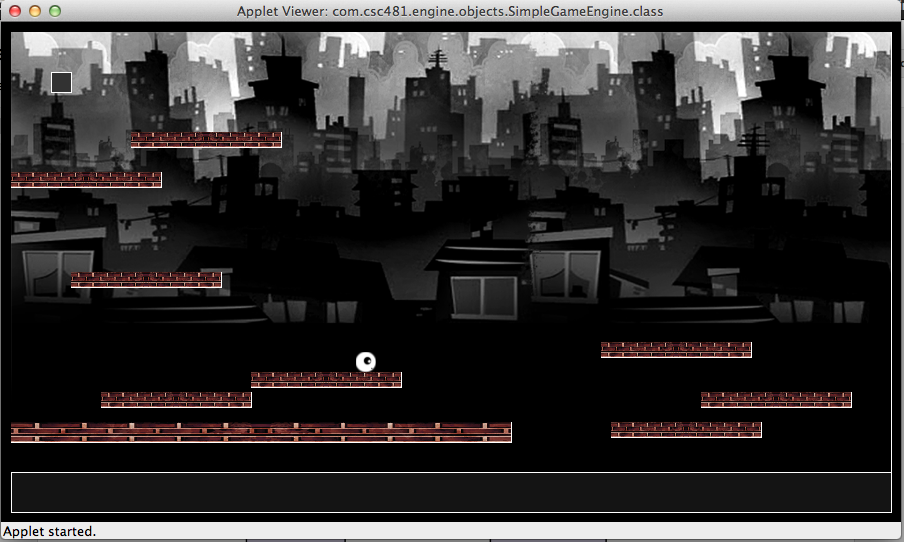
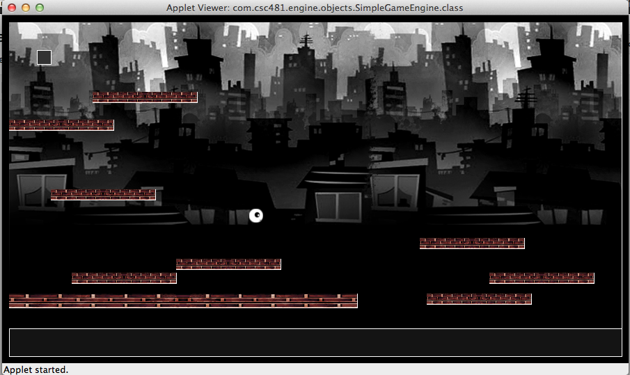
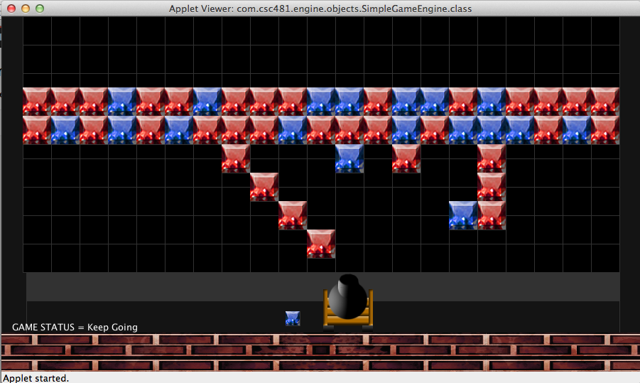
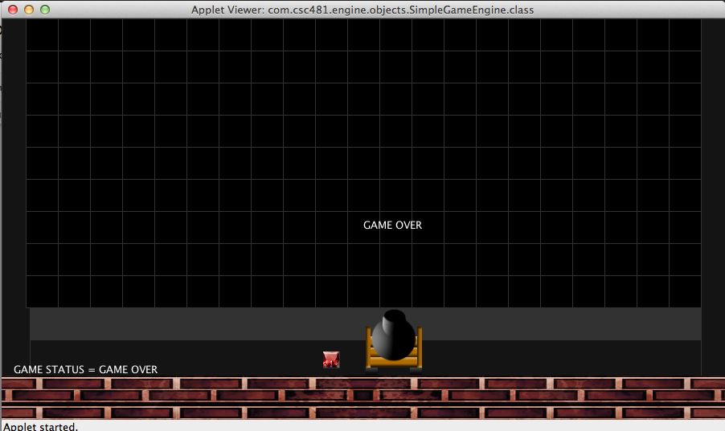
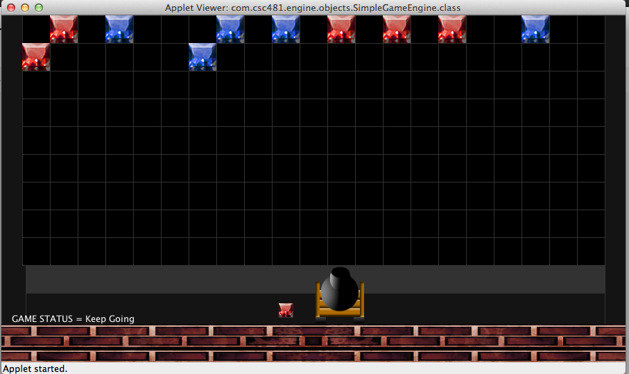

|
Game Engine Screen Shots
For my Game Design & Development class (CSC481), we were asked to create a working game engine throughout
the semester utilizing Processing and Eclipse programming environments. Below is a simple platform game that I created
out of the game engine.


Below are shots of the second game I created, Gem Bubble Shooter, utilizing the game engine I created for this class.



|
|